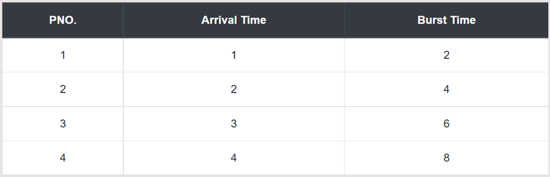

The Longest Remaining time First(LRTF) scheduling is the preemptive version of Longest Job First(LJF) scheduling. This scheduling algorithm is used by the operating system in order to schedule incoming processes so that they can be executed in a systematic way.
With this algorithm, the process having the maximum remaining time is processed first. In this, we will check for the maximum remaining time after an interval of time(say 1 unit) that is there another process having more Burst Time arrived up to that time.
Let's take an example of The LRTF scheduling algorithm. In the Following schedule, there are 4 processes with process ID P1, P2, P3 and P4. P1 arrives at time 1, P2 at time 2, P3 at time 3 and P4 arrives at time 4 in the ready queue. The processes and their respective Arrival and Burst time are given in the following table.
Step 0) The CPU is idle for 1 second interval.
Step 1) At time = 1, Available Process : P1. So, P1 is selected and executed for 1s.
Step 2) At time = 2, Available Process : P1, P2. So, P2 is selected and executed for 1s (since BT(P1)=1 which is less than BT(P2) = 4).
Step 3) At time = 3, Available Process : P1, P2, P3. So, P3 is selected and executed for 1s (since, BT(P1) = 1 , BT(P2) = 3 , BT(P3) = 6).
Step 4) Repeat the above steps until the execution of all processes.
Step 5) Let's calculate the average waiting time for above example.
The Turnaround time and the waiting time are calculated by using the following formula.
Turn Around Time = Completion Time - Arrival Time Waiting Time = Turnaround time - Burst Time